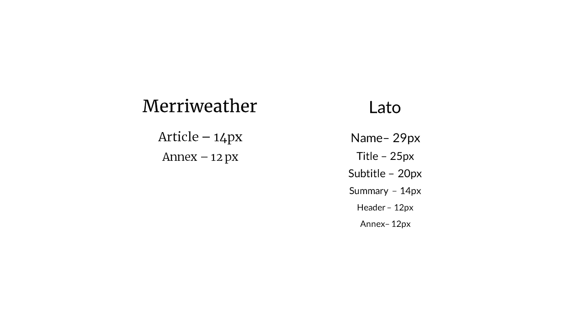
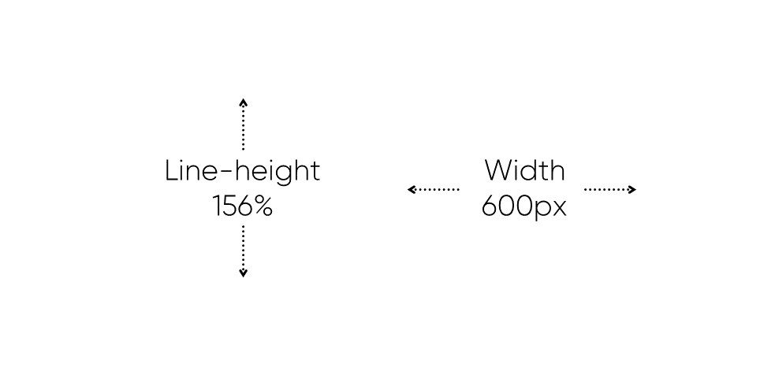
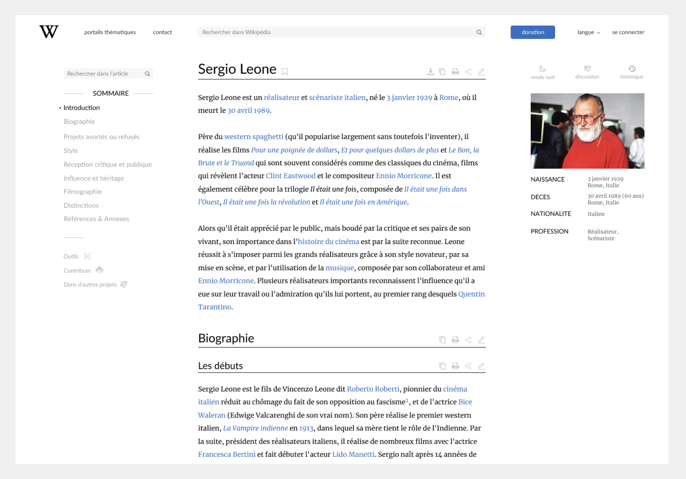
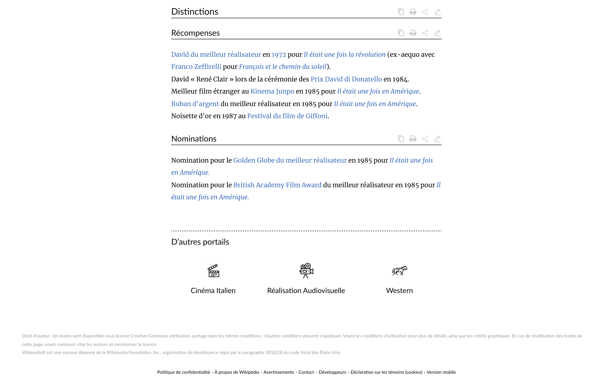

all projects
close
about
WIKIPEDIA
AMAZON
NESPRESSO
close
ABOUT
ME
I’m
Alexandre Mary
, a
french designer
based in
Paris
and first year student at HETIC.
I love challenges to improve myself and solve problems with creative solutions.
I’m currently looking for an
internship
in Paris from july to september.
CONTACT
MAIL
LINKEDIN
WIKIPEDIA
For a school project, I had to redesign a wikipedia article page. The goal was to make the content more enjoyable to read.
First of all, I had to study the actual website.
What can be improved?
There were 4 sections. Each of them contains useful features.
Let’s sort it out.

The main focus was the typography and all the parameters that come with it.
First, the font.
Serif, for the reading.
Sans-serif for all others readable texts.
For an optimal reading on screen, we need between 50 and 100 character per lines.
So, with the Merryweather font at 16 px, a width of 600px is almost perfect.
A line now contains on average 75 characters.

We reorganize the sections, and here we go.


With some features
next project